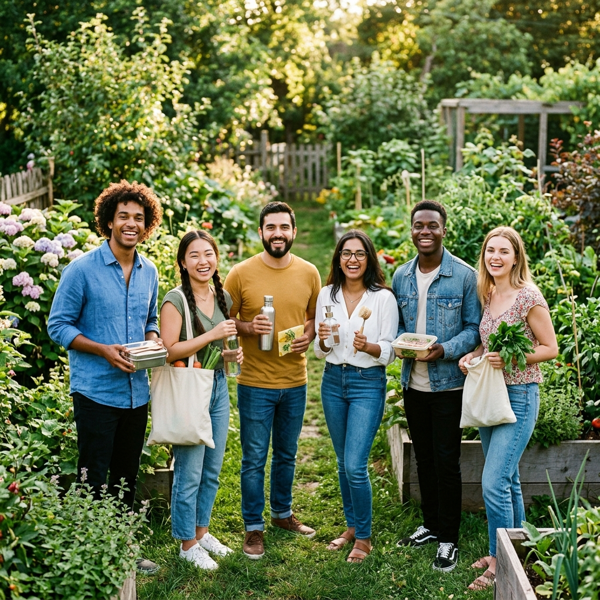

Huella de Carbono
Compensamos el 100% de las emisiones de CO₂ generadas por nuestra logística mediante proyectos de reforestación.

Somos un equipo apasionado por la naturaleza, comprometido con ofrecer productos que cuiden el planeta y mejoren tu vida cotidiana.

EcoMarket nació en 2019 cuando un grupo de amigos descubrió la dificultad de encontrar productos ecológicos de calidad en un solo lugar. Así emprendimos el camino de la sostenibilidad.
Hoy, con más de 500 productos curados y una comunidad de más de 2.000 clientes conscientes, seguimos creciendo con el mismo propósito: hacer que vivir sostenible sea fácil y asequible.
Democratizar el acceso a productos ecológicos de alta calidad para todos.
Ser el referente número uno en comercio electrónico sostenible en Latinoamérica.
Honestidad, sostenibilidad, innovación, impacto positivo y comercio justo.
Cada decisión que tomamos como empresa tiene en cuenta el impacto sobre el medio ambiente y las generaciones futuras.
Compensamos el 100% de las emisiones de CO₂ generadas por nuestra logística mediante proyectos de reforestación.
Todos nuestros empaques son biodegradables o reciclados. Eliminamos el plástico de un solo uso en toda nuestra cadena.
Por cada compra, donamos a proyectos de reforestación. Ya hemos contribuido con más de 1.000 árboles plantados.
Descubre la experiencia de nuestra comunidad con los productos sostenibles de OrganicGo.
"La bolsa de algodón y los envoltorios de cera de abeja cambiaron mi rutina diaria. La calidad es insuperable y el diseño es hermoso."
"OrganicGo es mi tienda de confianza. Las pajitas de metal y el termo de bambú son extremadamente resistentes. ¡El empaque 100% sin plástico me encanta!"
"Los cepillos de dientes de bambú y los jabones artesanales son perfectos. Suaves con mi piel y amigables con el planeta. ¡Recomendadísimo!"